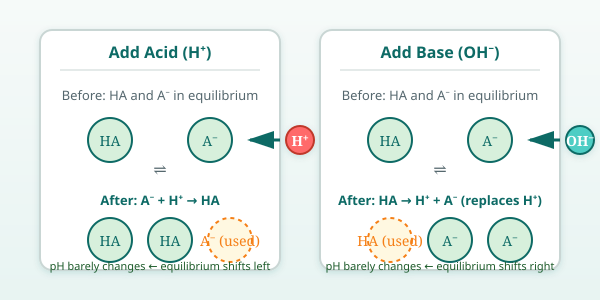

Pure water has a pH of 7. Add a tiny drop of hydrochloric acid, and the pH plunges. Add a drop of sodium hydroxide, and it soars. Most solutions have no defense against added acid or base — their pH changes dramatically.
But some solutions resist pH change. They are called buffers.
What a Buffer Is Made Of
A buffer contains two things together in the same solution:
A weak acid (call it HA) — it only partly dissociates.
The conjugate base of that weak acid (call it A⁻) — usually added as a salt like NaA.
Together, they form a conjugate acid–base pair. Common examples:
Carbonic acid (H₂CO₃) + bicarbonate (HCO₃⁻) — the main buffer in blood
Why Both Parts Are Needed
The weak acid HA can neutralize added base (it donates H⁺). The conjugate base A⁻ can neutralize added acid (it accepts H⁺).
HA ⇌ H⁺ + A⁻
When you add H⁺ (acid), the equilibrium shifts left — A⁻ soaks it up. When you add OH⁻ (base), it reacts with H⁺, and the equilibrium shifts right — HA dissociates to replace the lost H⁺. Either way, the pH barely moves.
Visual: Buffer Pair in Action

Key idea: A buffer is not "one thing" — it is a pair of species that can interconvert. Both must be present in reasonable amounts. A solution of only a weak acid, or only its conjugate base, is not a buffer.
Buffers in Real Life
Blood: The carbonic acid/bicarbonate system keeps blood pH at 7.4 ± 0.05. Without it, even the CO₂ from your breath would swing blood pH wildly.
Ocean: The same carbonate system buffers seawater, protecting marine life.
Lab: Phosphate buffers (pH ~7.2) and Tris buffers (pH ~8.0) are workhorses in biology labs.
Consumer products: Shampoos, medicines, and foods often contain buffers to stay stable on the shelf.
Imagine you have a solution that contains only acetic acid (CH₃COOH) in water, with no acetate salt added. You test its pH, then add a small amount of sodium hydroxide. The pH changes significantly. Why does this solution not act as a buffer against added base, even though acetic acid is a weak acid?